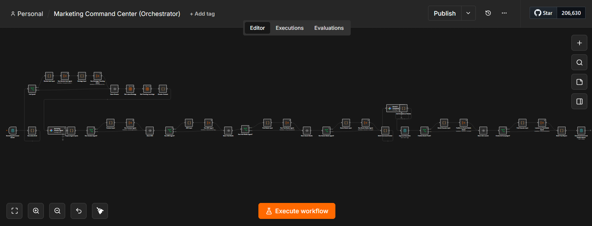
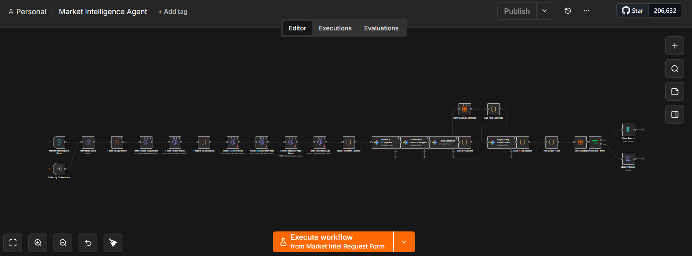
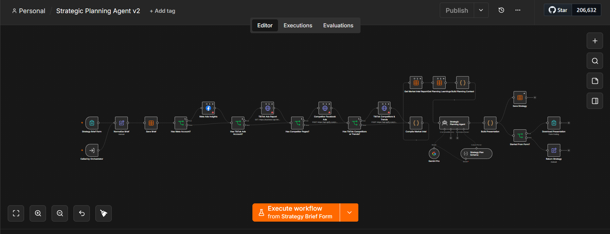
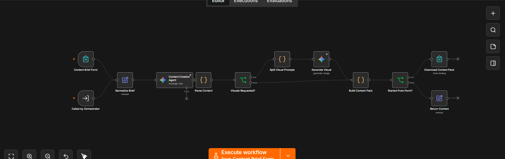
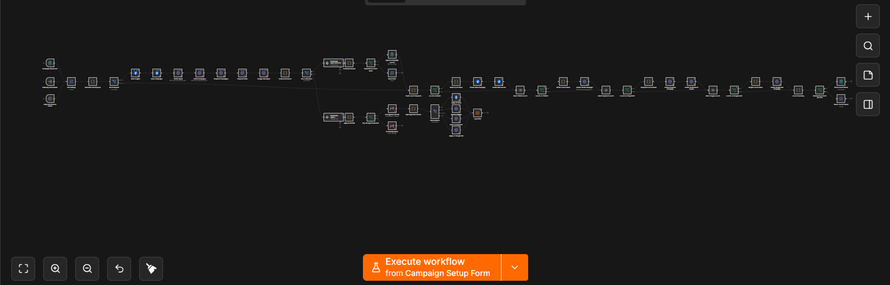
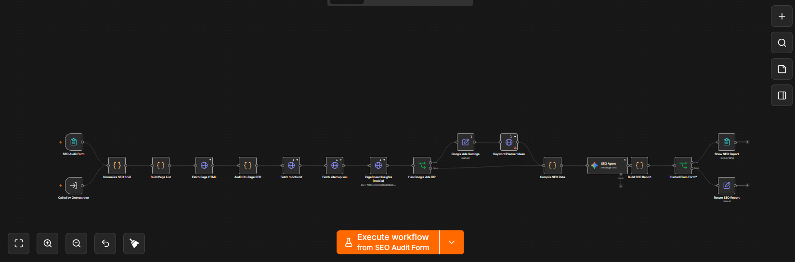
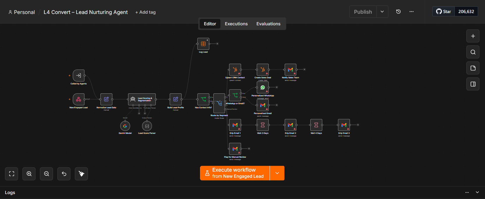
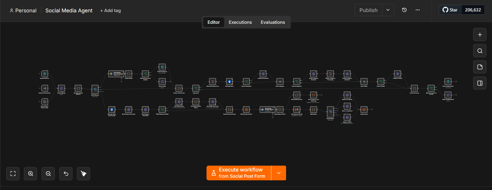
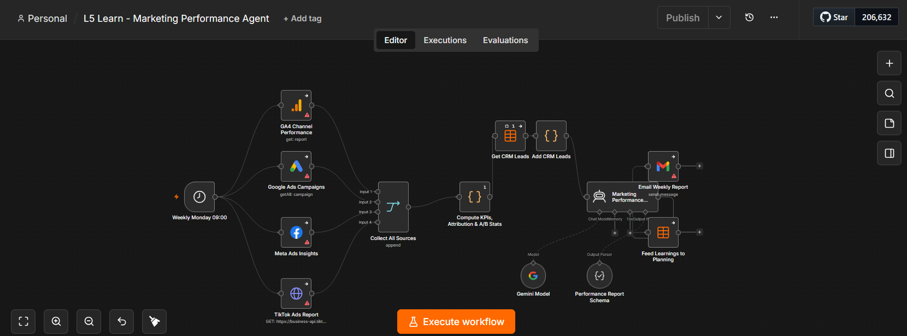
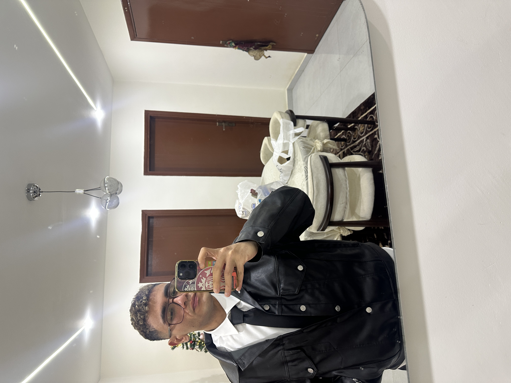

VIEW PROJECT IMAGE ↗Coordinates specialized agents across research, strategy, content, SEO, campaigns, and reporting. A central entry point routes marketing requests through the connected workflows.
I’m Abanoub George.
I connect AI, automation, and development to bring ideas to life.
01 / SELECTED WORK
AI, automation, websites,
and digital experiences.
Explore my work in AI and automation, web development, and Shopify — from connected marketing agents to digital experiences.

VIEW PROJECT IMAGE ↗Coordinates specialized agents across research, strategy, content, SEO, campaigns, and reporting. A central entry point routes marketing requests through the connected workflows.

VIEW PROJECT IMAGE ↗Combines news and social research with AI analysis for competitor insights, customer understanding, trend detection, and opportunity identification. Packages the findings into an HTML report.

VIEW PROJECT IMAGE ↗Brings market intelligence, advertising insights, and previous learnings into a planning agent that produces a structured strategy and presentation.

VIEW PROJECT IMAGE ↗Turns a content brief into structured copy, with an optional visual-generation branch and a packaged output for download or use by the orchestrator.

VIEW PROJECT IMAGE ↗Connects campaign setup with advertising and email branches, conditional routing, and approval steps to coordinate campaign actions across tools.

VIEW PROJECT IMAGE ↗Collects page HTML, robots.txt, sitemap data, and mobile PageSpeed insights. Adds optional keyword research and assembles the findings into an AI-assisted SEO report.

VIEW PROJECT IMAGE ↗Scores and segments incoming leads, routes personalized WhatsApp or email outreach, and connects CRM updates with timed email follow-ups and manual review.

VIEW PROJECT IMAGE ↗Connects draft generation and approval with social publishing, comment collection, and an approval flow for AI-assisted replies.

VIEW PROJECT IMAGE ↗Combines analytics, advertising, and CRM inputs in a scheduled workflow to compute KPIs, email an AI-assisted performance report, and feed learnings back into planning.
02 / A LITTLE ABOUT ME

I bring intelligent automation and thoughtful development together.
I’m Abanoub George Youssef Youssef. My work spans artificial intelligence, AI automation, web development, and Shopify development.
I focus on connecting tools, information, and experiences. My automation projects explore how specialized AI agents can work together across the marketing lifecycle — from market research and planning to content, lead nurturing, and reporting.
03 / SAY HELLO
Have an AI, automation, web, or Shopify project in mind? Let’s connect.